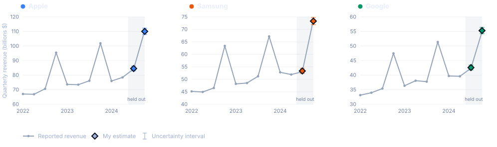

Nowcasting Company Revenue from Credit Card Data
Estimating the quarterly revenue of three consumer hardware companies from 158,031 card transactions made by a panel of 2,500 people. Mean absolute error of 0.54% on two quarters held out from the start, against a backtest that said to expect 0.83%.
What this is
A case study for the PolyFinances investment club at Polytechnique Montreal, done as part of team selection for the Rotman International Trading Competition. The brief: a panel of card transactions is given, and the quarterly revenue of Apple, Samsung and Google has to be estimated from it before those quarters are published.
The data is synthetic. It was generated and supplied by the club, and it does not describe the real companies. The numbers on this page say nothing about Apple, Samsung or Google. What is real is the method: the same panel-to-population calibration problem that alternative data desks actually work on.
How it was judged
Two quarters were held out before any modelling started, so the final comparison could only be run once. A walk-forward backtest over the earlier quarters set the expectation beforehand.
What was wrong with the data
Most of the work was here. Three defects were planted in the transaction file, and each one distorts the estimate in a different way. Finding them was worth more than any modelling choice made afterwards.

Amounts recorded in cents
About one Apple transaction in twenty is stored in cents rather than dollars, so it reads as a hundred times too large. Measured on the file, 4.76% of Apple rows against 0.62% for Samsung and 0.56% for Google, which is what makes it a trap: it lands almost entirely on one company and skews only that company's total.

A vendor that goes missing
The vendor field is blank on 36.3% of Pixel rows, 19,033 of 52,501. Dropping those rows loses a third of Google's sales; the product name is still there, so the vendor can be recovered rather than discarded.

Negative amounts
5,420 rows, 3.4% of the file, carry a negative amount, down to -127,859. Refunds belong in a revenue figure; a negative that large does not, and the two have to be told apart rather than summed blindly.
The model is deliberately small
Revenue is approximately panel sales multiplied by a company-specific ratio, since the panel is a fixed fraction of the market. The final estimate averages two ways of getting that ratio: the mean over all past quarters, and the ratio from the same quarter one year earlier, which carries the seasonality.
Nothing more elaborate was justified. With twelve quarters per company, a larger model would be fitting noise.
Cleaning was validated without the answer
Every cleaning decision was checked on 2022 alone, where reported revenue is exactly proportional to cleaned panel sales. Removing any single fix breaks that proportionality, which gives a test that never touches the held-out quarters.
This matters more than it sounds. Tuning the cleaning against the quarters being predicted is the easiest way to produce a number that looks excellent and means nothing.
The result
Reported revenue per quarter, with the two held-out quarters shaded and the estimate marked. The Q4 spike is the holiday quarter, and it is the part a naive trend would miss.

| Company | Quarter | Estimate ($B) | Interval | Actual | Error |
|---|---|---|---|---|---|
| Apple | 2024Q3 | 84.54 | 82.93 to 86.21 | 84.25 | +0.34% |
| Apple | 2024Q4 | 110.06 | 107.97 to 112.24 | 110.61 | -0.50% |
| Samsung | 2024Q3 | 53.34 | 52.32 to 54.39 | 53.05 | +0.54% |
| Samsung | 2024Q4 | 73.30 | 71.91 to 74.75 | 73.83 | -0.72% |
| 2024Q3 | 42.60 | 41.79 to 43.45 | 42.38 | +0.52% | |
| 2024Q4 | 55.29 | 54.24 to 56.38 | 54.93 | +0.65% |
Intervals are plus or minus two backtest standard errors. All six actuals fall inside.
What the numbers said
The held-out quarters were the easy ones
The walk-forward backtest over 18 forecasts averaged 0.83%. The two held-out quarters came in at 0.54%. The honest reading is that the final quarters happened to be kinder than average, not that the method improved. The 0.83% is the number to plan with.
The card data is doing the work
A benchmark that ignores the transactions and extrapolates reported revenue alone is about four times less accurate. That gap is the only thing that justifies collecting the panel at all, and it is the comparison worth reporting.
One cleaning fix carries most of it
Undoing each decision one at a time: leaving the cents bug in place moves the error from 0.54% to 7.18%, more than a tenfold increase. The other fixes matter far less.
Why those two defects behave so differently
The missing vendors cost almost nothing, while the cents bug costs everything, and the reason is not that one is bigger. A defect that is stable across quarters, such as the same share of Pixel rows missing their vendor every quarter, gets absorbed when the ratio is calibrated: it shifts panel sales by a constant factor, and the ratio quietly cancels it. A defect whose size changes from quarter to quarter does not cancel, because no single ratio can absorb a moving target. Only cleaning removes that one.